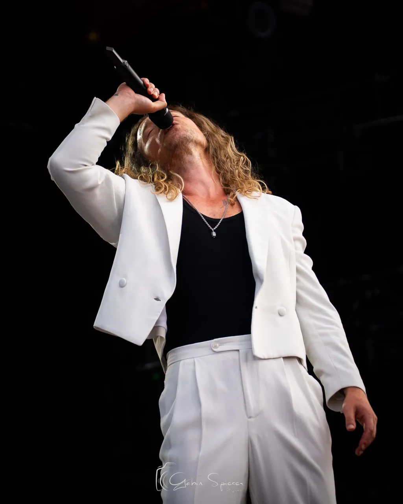
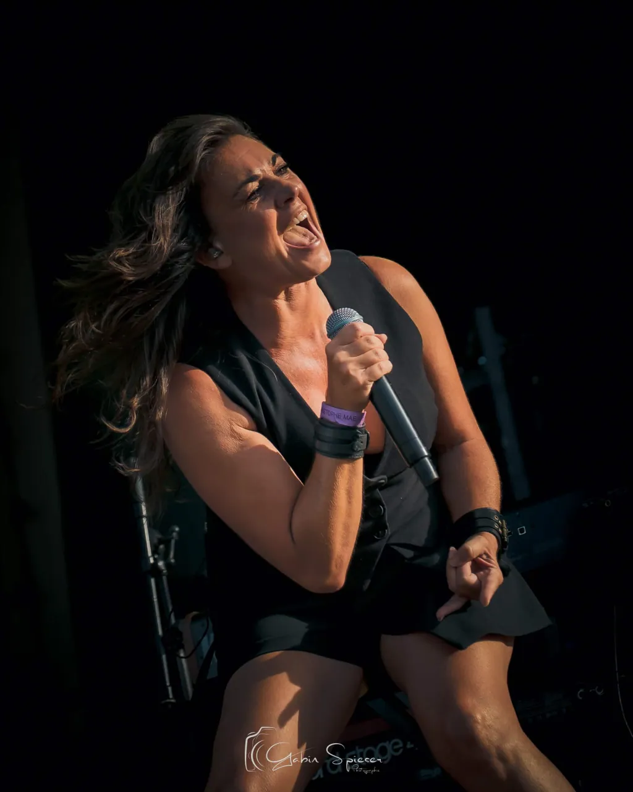
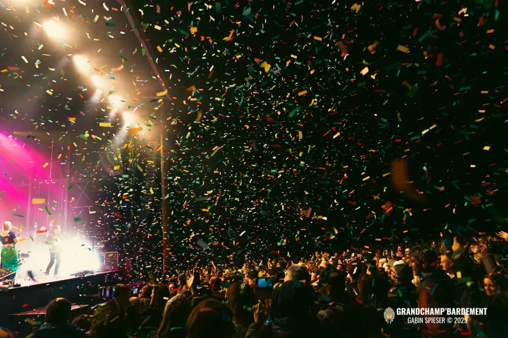

Sur ordinateur, survolez la photo ou placez le focus dessus pour lire sa légende. Sur écran tactile, touchez la photo pour la révéler, puis utilisez Agrandir. Les liens des artistes s’ouvrent dans un nouvel onglet.

Gabin Spieser
Photographe de concerts & festivals
Grand Est & BelgiqueDes images qui résonnent.
Votre sueur. Votre rage. Votre scène.
Je photographie ce qui se passe quand vous oubliez l’objectif et que vous donnez tout.
01 / Dans la fosse
On entend
presque le son.
La fumée. Les décibels. L’adrénaline.
Et cette seconde que personne
ne pourra rejouer.


Foire en Scène · Châlons-en-Champagne · 2026
05
Foire en Scène · Châlons-en-Champagne · 2026
06
Place aux Artistes · Wavre · 21 août 2026
10


Reims Arena · 12 avril 2026
09Des images qui donnent envie de dire :
« J’aurais dû
y être. »


Le public
02Votre scène / Votre univers
Concerts, festivals
& portraits d’artistes.
Je suis basé à Châlons-en-Champagne et je me déplace dans le Grand Est et en Belgique. Votre scène, votre univers. Des images qui vous ressemblent.
MIKA, Julien Doré, Feu! Chatterton : découvrez aussi les photographies de Foire en Scène à Châlons-en-Champagne, une sélection pour prolonger le live.
02 / Derrière l’objectif
Salut.
Moi, c’est Gabin.
La musique m’a servi de refuge.
Aujourd’hui, je lui rends la pareille.
Je ne suis pas né avec une guitare dans les mains. Et franchement, pour vos oreilles, c’est mieux comme ça. Moi, j’ai choisi l’appareil photo.
Depuis trois ans, je photographie les gens qui montent sur scène et qui donnent tout. Je veux raconter ce que vous vivez, ce que vous dégagez, ce qui fait que votre projet est le vôtre.
La suite de mon histoireLe prochain concert
Votre scène.
Votre énergie.
On en parle ?
Racontez-moi votre projet, votre son, votre folie.
On va lui donner des images qui lui ressemblent.